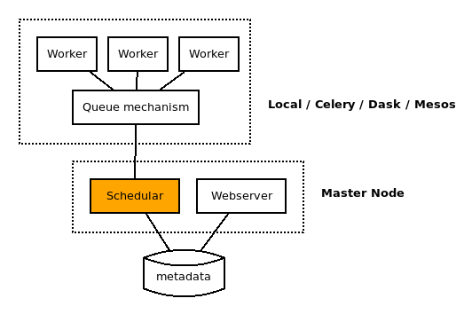

Apache Airflow
Data pipelines the AirBnb way
 https://sheenarbw.github.io/pres-airflow/
https://sheenarbw.github.io/pres-airflow/
Contents
- The problem
- Enter Apache Airflow
- Interaction
- Architecture
The problem
As data-driven organisations grow...
- Data pipeline requirements grow
- Multiple data sources
- complex networks of processes
- intricate dependencies
- specific schedules
- stakeholder requirements grow and shift
Overarching technical needs grow...
- monitoring
- retries
- maintainable code
- scale
- troubleshoot
- autherization
- SLA
Enter Apache Airflow

“Airflow is a platform to programmatically author, schedule and monitor workflows ”
Example Dag: configuration as Python code
with DAG(
"do_nice_things",
default_args=default_args,
schedule_interval="@daily",
) as dag:
task_fetch_data = BashOperator(
task_id="fetch_the_data",
bash_command="wget https://example.foo/blah.csv"
)
task_clean_data = PythonOperator(
task_id="clean_the_data",
python_callable=clean_it_yo
)
task_fetch_data >> task_clean_data
Why is this cool?
- can do simple "declarative" things like above
- can generate DAGs dynamically (eg create a bunch of tasks within a loop)
Operators
- PythonOperator - executes arbitrary Python code
- BashOperator - executes arbitrary bash commands,leveraging Jinja templating
- BranchPythonOperator
- TriggerDagRunOperator
- EmailOperator / SlackOperator
- ...more than 40 in total
Interaction
Web UI tour

Architecture
Deployment
# Based on https://github.com/puckel/docker-airflow
version: "3.3"
services:
nginx:
image: nginx:1.17.1
ports:
- "80:80"
- "443:443"
volumes:
- ./nginx:/etc/nginx/conf.d
- ./gitignore/nginxlog:/var/log/nginx
- $SECRET_DIR:/etc/apache2
restart: always
postgres:
image: gcr.io/cloudsql-docker/gce-proxy:1.12
ports:
- "5432:5432"
command: /cloud_sql_proxy -instances=$SQL_CONNECTION_NAME=tcp:0.0.0.0:5432 -credential_file=/config/$GOOGLE_APPLICATION_CREDENTIALS_FILE
volumes:
- $SECRET_DIR:/config
webserver:
image: umuzi/docker-airflow:1.10.3
restart: always
depends_on:
- postgres
environment:
- LOAD_EX=n
- EXECUTOR=Local
- POSTGRES_USER=$POSTGRES_AIRFLOW_USER
- POSTGRES_PASSWORD=$POSTGRES_AIRFLOW_PASS
- POSTGRES_DB=$POSTGRES_AIRFLOW_DB
volumes:
- ../dags:/usr/local/airflow/dags
- ../data/docker:/usr/local/airflow/data:Z
- ../logs/docker:/usr/local/airflow/logs:Z
command: webserver
healthcheck:
test: ["CMD-SHELL", "[ -f /usr/local/airflow/airflow-webserver.pid ]"]
interval: 30s
timeout: 30s
retries: 3
Me :)
sheena.oconnell@umuzi.org
|